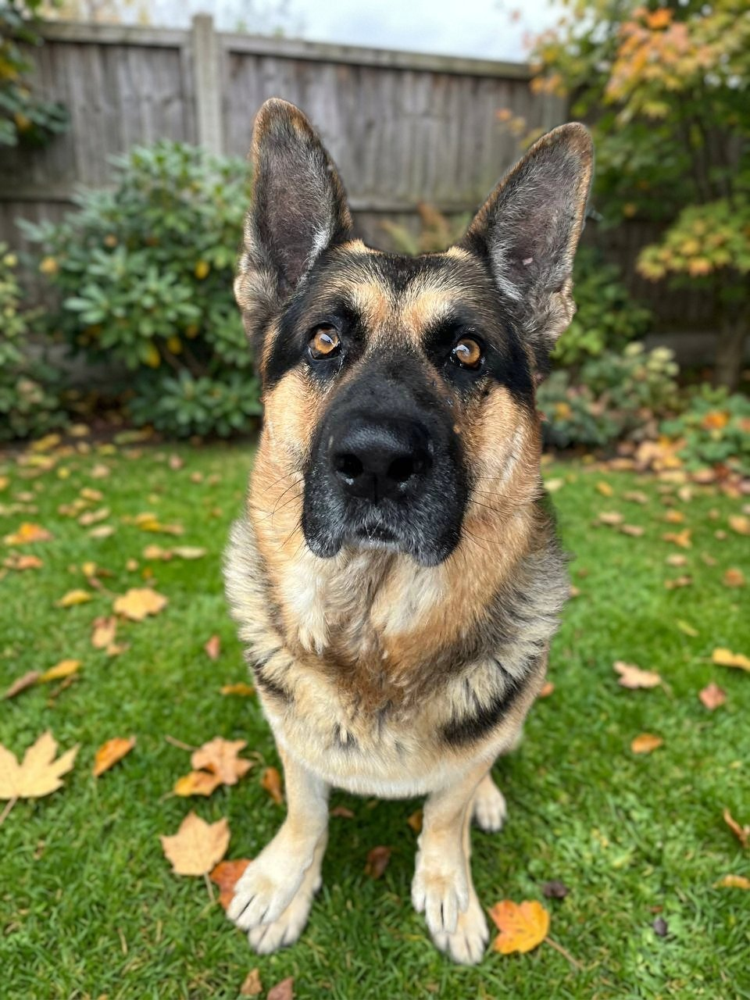
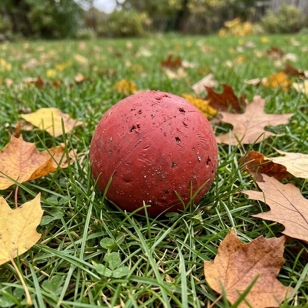
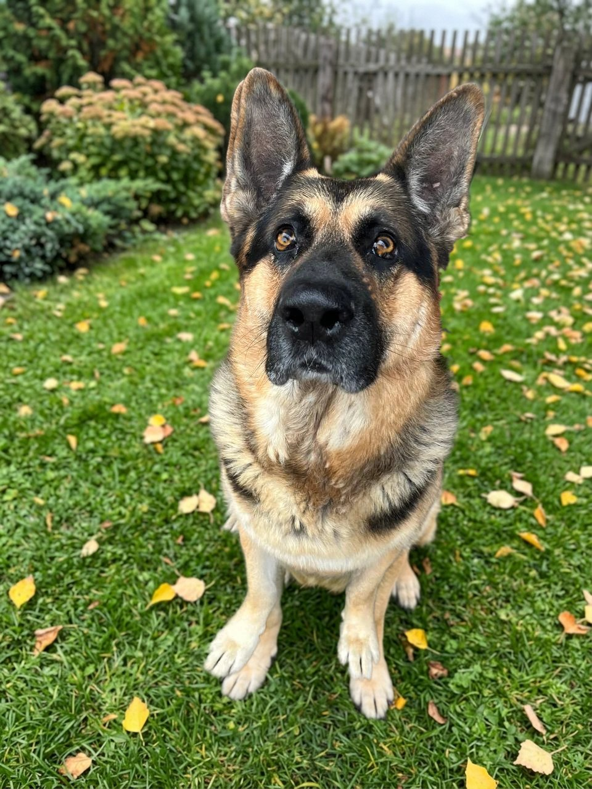

німецька вівчарка

Мене звати Тайсон. Я народився у 2021 році, у мене було ще п'ятеро братів і сестер. Коли мені було два місяці, мене забрали додому, і тоді ж мені подарували червоний м'ячик. З того часу я з ним не розлучаюсь.
Я дуже впертий і дуже ревнивий. Я маю бути завжди в центрі уваги, а якщо гладять когось іншого, я одразу прибігаю і лізу під руку. Котів і інших собак я не люблю, у моєму дворі головний я.
Спокійно сидіти я не вмію, мені завжди хочеться гратися. Ще я дуже люблю курячі ніжки і кісточки. Коли мені дають кісточку, я часто приношу її своїм людям, бо я ділюся з тими, кого люблю.
Майже всі команди я вивчив завдяки м'ячику. Мені його показували, а я робив, що просять, і за це м'ячик кидали.

Мій червоний м'ячик. Я граюся з ним з самого дитинства, він уже погризений, але іншого мені не треба. М'ячик мій, і я нікому його не віддаю. Хіба що на хвилинку, щоб його кинули, а я приніс назад.
